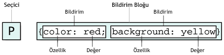

CSS'in Yapısı
CSS'in yapısı iki ana kısımdan oluşur. Seçiciler(Selector) ve Bildirim Bloğu(Declaration Block). Bildirim Bloğuda iki ye ayrılır. Özellik(Property) ve Değer(Value).

Not XML de Seçiciler HTML elementleri dışında yeni oluşturulan elementlerde olabilir.
Tüm HTML elementleri potansiyel Seçicilerdir. Seçiciler ismini de
buradan alır, HTML seçilen element anlamındadır. Bildirim bloğu süslü
parantezle açılır ve kapanır. Bildirimler arasında " ; " noktalı virgül
kullanılır. özellik ve değerler birbirinden " : " iki nokta üstüste ile
ayrılır.
h1 { font: medium Arial; }
şeklinde arada boşluk verilerekde bildirm yapılabilir.
Burada ilki font'un boyutunu ikincisi ise font ismini gösterir. İleride
bu konuya daha ayrıntılı gireceğiz. Ayrıca sadece font etiketine özel "
/ " kullanımı vardır örnek aşağıda:
h1 { font: medium/120% Arial; }
Burada " / " Seçicinin font boyutunu ve satır yüksekliğini gösterir.(font_boyutu/satir_yuksekliği)
Gruplama
Yukarıda hep bir Seçici'yi sadece bir HTML elementine atamayı gördük, Birden fazla HTML elementine de atama yapabilirz, buna gruplama denir. Gruplama Seçicilerde yapıldığı gibi Bildirmlerde de yapılabilir.
p, h3 { font-family: Arial; }
Not CSS2 ile birlikte Evrensel Seçici(universal selector) Seçiciler arasına katılmıştır, " * " ile gösterilir. * {color: red;} tüm elementleri kırmızı yapar. Bir anlamda gruplama yapar. Ayrıntılı bilgi için W3
Burada düküman içindeki paragraflarda(p) ve başlıklarda(h3) fontların
Arial olacağını tek bildirim ile belirttik. Gruplama yapılan Seçicileri
ayırmak için " , " virgül kullanılır. Sınırsız sayıda Seçici
gruplanabilir. Gruplama tasarımcılara büyük kolaylıklar sağlar.
Bildirim'lerimizi de gruplayabiliriz, bununla ilgili yukarıda örnekler
mevcut. Bir veya daha fazla Seçiciye bir den fazla bildirim ekleye
biliriz.
p, h3{ font-family: Arial; font-size:2; font-weight: bold; }
Seçiciler ikiye ayrılır. Sınıf Seçicisi ve Id Seçicisi. CSS ile işlenmemiş bir dökümanda başlangıçta bir plan yaparak hangi içeriğin Sınıf Seçicisi hangi Seçicicinin Id Seçicisi olacağını planlamalıyız.
Sınıf Seçicisi(Class Selector)
Aynı HTML elementine farklı özellikler atamak için Sınıf Seçicisini
kullanırız. Bir örnek verecek olursak; hazırlayacağımız dökümanda iki
adet paragraf tanımlaması yapacağımızı planlıyoruz. Bunlardan biri sağa
dayalı, diğeri ise ortalı olmasını istiyoruz
p.sagadaya { text-align: right } p.ortala { text-align: center }
Bu Seçicileri sayfamızda uygulamak için;
<p class="sagadaya">Aynı HTML elementine farklı özellikler atamak için Sınıf Seçicisini kullanırız.</p> <p class="ortala">Yukarıdaki bilgiyi dikkatlice okumalısınız</p>
Birde önemli bir tanımlama yapacağınızı düşünün, ancak
sadece bir HTML elementine değilde istediğiniz sayıda HTML elementinde
bunu kullanmak isterseniz;
.ortala { text-align: center }
Bu tanımlamayı yaptıktan sonra istedğimiz her HTML elementine bu sınıfı uygulayabiliriz.
<span class="ortala"> Burada birşeyler yazar </span> <p class="ortala">Burada da başka bişeyler yazar</p>
Çoklu sınıflar, birden fazla sınıfı bir HTML
elementine uygulamak için kullanılır.
<p class="onemli uyari">Ülkemizde meydana gelen trafik kazalarının yaklaşık % 90'ı insanların hataları sonucu eydana gelmektedir.</p>
Yukarıdaki örnekte görüldüğü gibi bir uyari Sınıfımız
birde onemli Sınıfımız mevcut. Bazı metinlerin önemli uyarı
olacağı düşüncesi ile böyle bir atama yapılabilir. Bunun için
kullanıcığımız kod;
.onemli { font-weight: bold; } .uyari { font-style: italic; } .onemli.uyari { background: silver; }
Önemli metinler için kalın, uyari için italiktik atmalar yapıyoruz. Birde her ikisine birden de atama yapabiliyoruz. Dikkat ederseniz class="onemli uyari" olarak atama yaparken CSS Seçicisinde .onemli.uyari şeklinde yazıyoruz.
Id Seçecileri
Id Seçicisi Sınıf Seçicisinden farklıdır. Sınıf Seçicisi sayfada birden fazla elemente atanırken Id Seçicisi sadece bir tane elemente atanır. Seçicisi adının başında # işareti olan Seçiciler Id Seçicisidir.
#mavi{ background:blue; } #kirmizi{ background:red; }
HTML;
<p id="mavi">Bu yazının arkafon rengi mavi</p> <p id="kirmizi">Bu yazının arkafon rengi kırmızı</p>
Sınıf mı? Id mi?
Yukarıda Id Seçicisi için her nekadar da bir sayfada sadece bir defa
kullanılır desekte tasarımcının sayfada bir çok yerde kullanmasına
tarayıcılar ses çıkarmaz, yani hata mesajı vermez. Ancak Bu elementleri
DOM scriptlerinde kullanırken Id atamasını bir kaç yerde yaptığımızda
hata alacağızdır. Bu nedenle her nekadar tarayıcılar izin versede Id
Seçicisini bir kez kullanmalıyız. Birden fazla kullanacağımız elementler
için Sınıf Seçicisini kullanmalıyız. Bu kodumuzu daha kullanışlı ve
temiz yapacaktır. Sınıf ve Id Seçicileri küçük-büyük harfe karşı
duyarlıdır;
p.onemliBilgi { font-weight: bold; }
ve kullanımıda;
<p class="onemlibilgi">Uygulama olmaz .</p>
Yukarıdaki kod uygulanmayacaktır çünkü " B " bir yerde büyük birde küçük kullanılmıştır. Bazı eski tarayıcılar bu kuralın dışında kalabilir.
Yorumlar !